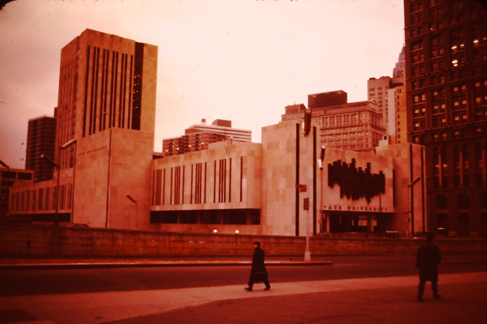

New York. Pace University, Park Row at the Brooklyn Bridge Ramp, 1975.
This is the building they tore down the New York Herald Building to build, and the ramp on the foreground partially takes the place of the old New York World Building. Two fine old buildings, lost to uninspired concrete.